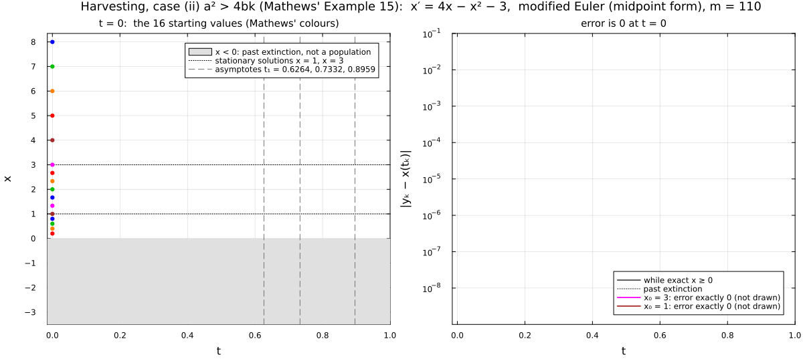
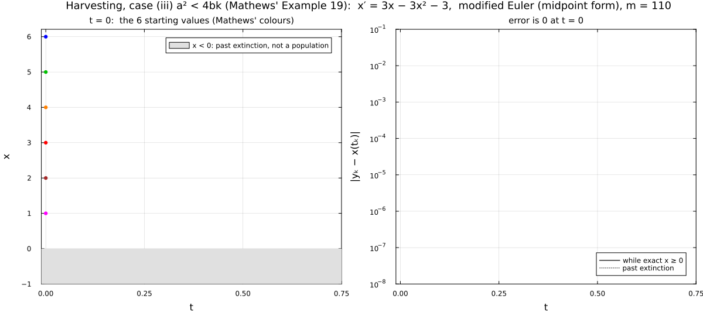

Harvesting Model
Source inspiration: (Mathew 2000-2019).
Description
The harvesting model adds a constant removal rate \(k\) (fish caught, trees cut, animals hunted per unit time) to the logistic model of bounded population growth:
\[ \frac{dx}{dt} = a x - b x^2 - k, \qquad x(0) = x_0, \qquad a, b, k > 0 . \]
Its right-hand side is a downward parabola in \(x\), so everything depends on the stationary solutions, the constant solutions \(x(t) = r\) with \(a r - b r^2 - k = 0\). When \(a^2 > 4bk\) there are two of them, \(r_1 < r_2\): populations that start above \(r_1\) settle at \(r_2\), and populations that start below \(r_1\) die out in finite time. When \(a^2 = 4bk\) the two merge into the single value \(a/(2b)\), and when \(a^2 < 4bk\) there are none, so every population dies out. In each case the equation is separable and Mathews writes the solution as a formula: a rational function of \(t\), a quotient of exponentials, or a tangent.
Mathews then solves the same equations numerically with the modified Euler method in its midpoint form, with step \(h = (b - a)/m\) on an interval \([a, b]\):
\[ y_{k+1} = y_k + h\, f\!\left(t_k + \tfrac{h}{2},\ y_k + \tfrac{h}{2} f(t_k, y_k)\right), \]
always with \(m = 110\) steps. He works one example for each case, \((a, b, k) = (2, 1, 1)\), \((4, 1, 3)\) and \((3, 3, 3)\), draws families of solution curves from many starting values \(x_0\), and shows that the numerical curves reproduce the formulas. Every formula below has been checked symbolically, and every number recomputed.
Animations
Cases 1 to 3 show Mathews’ modified Euler runs growing in time. All the runs of an example share one clock: each frame adds the steps up to the time in the title, so a run that Mathews computes on a shorter interval stops early, and a dot marks the newest point of each run. The left panel is Mathews’ final graph for the example, with his intervals, \(m = 110\), his window and his colours (taken from his programs, with his green darkened for legibility), except that the window is extended below \(x = 0\). Mathews’ windows stop at \(x = 0\), but several of his runs continue past extinction, and the gray band shows where they go; there the curves are dashed, because a negative \(x\) is no longer a population, only the continuation of the formula and of the method. Crosses mark the exact extinction times \(t_0\), and dashed vertical lines the asymptotes \(t_1\) that lie in the window. The right panel is new. It plots the error \(|y_k - x(t_k)|\) of each run against the exact solution on a log scale, solid while the exact \(x \ge 0\) and dotted past extinction, and its title gives the largest error so far while \(x \ge 0\). A run that starts on a stationary solution has error exactly \(0\) and is not drawn there. Every error is \(0\) at \(t = 0\), where nothing is drawn, and an error too small for the panel leaves its bottom edge. The method runs in double precision, as in Mathews’ program, and the exact solutions, formulas (5), (6) and (7) through the same double-precision starting values, are evaluated in 256-bit arithmetic.
Case 4 is a different picture, with one frame per harvest rate \(k\). On the left are the exact solutions for twelve starting values, each drawn only until it reaches \(x = 0\), where a cross marks the extinction time: blue if the population survives, red if it dies out, black if it is stationary. The band of starting values that die out, \(0 \le x < r_1\) (all of \(x \ge 0\) when there is no stationary point), is shaded. On the right is the rate \(x' = 4x - x^2 - k\), drawn sideways so that \(x\) is on the same vertical axis in both panels; the parabola leaves the panel on the left. The vertical line \(x' = 0\) is the phase line: where the parabola lies to its right, \(x\) increases (blue triangles), where it lies to its left, \(x\) decreases (red triangles), and where it crosses are the stationary points, the stable \(r_2\) (filled dot) and the unstable \(r_1\) (open dot), or at \(k = 4\) the double point (gray diamond). The animation pauses at \(k = 0\), \(3\), \(4\) and \(6\).
Mathews’ module links no animation, and his animation archive has none for the harvesting model, so all four animations are new, with no Mathews original. Cases 1, 2 and 3 animate his numerical Examples 8, 15 and 19. Their starting values include those of his formula graphs in Examples 4, 5, 10, 11, 12 and 17, and he says himself that their graphs are the same as his graphs of Examples 6, 13 and 17; the three graphs in the theory part of his module show families of the same kind. Case 4 uses the \(a = 4\), \(b = 1\) of Mathews’ case (ii) example and passes through his \(k = 3\), but its cases (i) and (iii), at \(k = 4\) and \(k > 4\), are not his parameter sets \((2, 1, 1)\) and \((3, 3, 3)\), which are Cases 1 and 3. Not animated are the S-shaped logistic curve of the Background section, Examples 1, 2, 3, 7, 9, 14, 16 and 18, whose results are formulas rather than graphs, and the extraneous branches beyond the asymptotes that Mathews’ plots of Examples 5 and 12 contain.
Julia source scripts that generated these animations are linked under each case.
Case 1 — Case (i), one stationary solution (Mathews’ Example 8), \(x' = 2x - x^2 - 1\), ten runs with \(m = 110\)
Behavior: The five runs that start above \(1\) fall toward the stationary solution \(x = 1\) and stay above it, and the run from \(x_0 = 1\) stays exactly at \(1\), since \(f(t, 1) = 0\). The four runs that start below \(1\) fall to \(x = 0\), at the extinction times \(t_0 = \tfrac14, \tfrac23, \tfrac32, 4\) for \(x_0 = \tfrac15, \tfrac25, \tfrac35, \tfrac45\). Mathews stops the runs for \(\tfrac15\), \(\tfrac25\) and \(\tfrac35\) at \(t = 0.5\), \(1\) and \(1.5\), short of their asymptotes at \(t_1 = \tfrac54, \tfrac53, \tfrac52\). The first two continue past extinction and end in the gray band at \(y_{110} = -0.3333\) and \(-0.4999\); the run for \(\tfrac35\) ends at its extinction time, with \(y_{110} = 8.234 \times 10^{-5}\), and the run for \(\tfrac45\) reaches its extinction time \(t_0 = 4\) at the right edge, with \(y_{110} = 7.641 \times 10^{-4}\) (its asymptote, \(t_1 = 5\), is outside the window). In the right panel the errors of the runs from \(x_0 = 6, 5, 4, 3, 2\) are ordered by \(x_0\) at every step, and the largest error while \(x \ge 0\), \(2.360 \times 10^{-2}\) for \(x_0 = 6\) at \(t = 0.1091\), is reached by \(t = 0.2\), while that curve is still falling steeply. The error of the run from \(\tfrac45\) grows at every step, to \(7.641 \times 10^{-4}\) at \(t = 4\), the largest error at the end of the window.

Case 2 — Case (ii), two stationary solutions (Mathews’ Example 15), \(x' = 4x - x^2 - 3\), sixteen runs with \(m = 110\)
Behavior: The five runs that start above \(3\) fall toward the stationary solution \(x = 3\), the five that start between \(1\) and \(3\) rise toward it, and the runs from \(x_0 = 1\) and \(x_0 = 3\) stay exactly on the stationary solutions, with errors exactly zero. The four runs below \(1\) reach \(x = 0\) at \(t_0 = 0.07708\), \(0.1839\), \(0.3466\) and \(0.6496\) for \(x_0 = \tfrac15, \tfrac25, \tfrac35, \tfrac45\) and continue into the gray band, to \(y_{110} = -0.4857\), \(-1.112\), \(-3.167\) and \(-3.086\) at the ends of their intervals, \(t = 0.2\), \(0.4\), \(0.7\) and \(1\). Mathews’ shorter intervals stop the first three short of their asymptotes, at \(t_1 = 0.6264\), \(0.7332\) and \(0.8959\); the asymptote of the fourth, at \(t_1 = 1.199\), is beyond the window. In the right panel the errors of the runs from \(x_0 = 8, 7, 6, 5, 4\) are ordered by \(x_0\) at every step, and the largest error while \(x \ge 0\), \(2.087 \times 10^{-3}\) for \(x_0 = 8\) at \(t = 0.08182\), is reached by \(t = 0.1\). The runs between the two stationary solutions are far more accurate, with errors of at most \(5.182 \times 10^{-6}\); the dip in one of them is where the error of the run from \(x_0 = 2\) changes sign, between \(t = 0.6182\) and \(0.6273\). The errors of the four runs below \(1\) grow at every step, and past extinction the error of the run from \(x_0 = \tfrac45\) becomes the largest in the panel, \(7.056 \times 10^{-3}\) at \(t = 1\), more than three times the largest error while \(x \ge 0\).

Case 3 — Case (iii), no stationary solution (Mathews’ Example 19), \(x' = 3x - 3x^2 - 3\), six runs with \(m = 110\)
Behavior: With no stationary solution every run falls, and each reaches \(x = 0\) before \(t = 0.75\): at \(t_0 = 0.4031\) for \(x_0 = 1\) and at \(0.6046\), \(0.6778\), \(0.7128\), \(0.7330\) and \(0.7460\) for \(x_0 = 2, 3, 4, 5, 6\), so the crosses crowd toward the right edge. Every run therefore ends in the gray band, from \(y_{110} = -0.01041\) for \(x_0 = 6\) to \(-0.5937\) for \(x_0 = 2\), and the run from \(x_0 = 1\) drops below the window (its first point below \(x = -1\) is at \(t = 0.6068\)) and ends at \(y_{110} = -5.348\), as the note at the bottom of the frame says. Its asymptote, at \(t_1 = 0.8061\), is the earliest of the six, so none lies in Mathews’ interval. In the right panel the largest error while \(x \ge 0\), \(9.246 \times 10^{-3}\) for \(x_0 = 6\) at \(t = 0.02727\), is reached by \(t = 0.05\), and as long as all six exact solutions are positive the errors are ordered by \(x_0\). Past extinction the error of the run from \(x_0 = 1\) grows at every step, to \(4.814 \times 10^{-2}\) at \(t = 0.75\), which is \(0.05613\) before its asymptote.

Case 4 — Sweeping the harvest rate, \(x' = 4x - x^2 - k\), \(k = 0, 0.1, \ldots, 6\), \(x_0 = 0.5, 1, \ldots, 6\) on \(0 \le t \le 2\) (new)
Behavior: At \(k = 0\) there is no harvesting and the equation is the logistic equation: \(r_1 = 0\), \(r_2 = 4\), and every population tends to \(4\) (the one from \(x_0 = 4\) is stationary). As \(k\) grows, \(r_1 = 2 - \sqrt{4 - k}\) rises and \(r_2 = 2 + \sqrt{4 - k}\) falls, and the shaded band of starting values that die out widens. The population from \(x_0 = 0.5\) is the first to die, from \(k = 1.8\) on (\(r_1\) passes \(0.5\) at \(k = 1.75\)), at \(t_0 = 1.104\) for \(k = 1.8\). At Mathews’ \(k = 3\) the stationary points \(r_1 = 1\) and \(r_2 = 3\) are among the starting values, the population from \(x_0 = 0.5\) dies at \(t_0 = 0.2554\), and all the others tend to \(3\). At \(k = 4\) the two stationary points merge into the double point \(x = 2\), where the parabola just touches the phase line: the populations from \(x_0 = 0.5\), \(1\) and \(1.5\) die at \(t_0 = \tfrac16\), \(\tfrac12\) and \(\tfrac32\), and those above \(2\) approach it only slowly, like \(2 + 1/t\), so at \(t = 2\) they are still \(0.25\) to \(0.4444\) above it. One step further, at \(k = 4.1\), the parabola has left the phase line and every population dies out, but the large ones die late, \(x_0 = 2\) at \(t_0 = 4.471\) and \(x_0 = 6\) at \(t_0 = 9.189\), beyond the window, so only three crosses show. From \(k = 5.4\) on all twelve die before \(t = 2\), and at \(k = 6\) the last of them, from \(x_0 = 6\), dies at \(t_0 = 1.546\).

Background: the Logistic Equation
The exponential model \(y' = a y\) describes unchecked growth; its solution is \(y(t) = c\, e^{a t}\). Subtracting a crowding term \(b y^2\) gives the logistic model of bounded growth.
For constants \(a, b > 0\) the logistic differential equation is
\[ y' = a y - b y^2, \qquad y(0) = y_0 . \tag{1} \]
For \(y_0 > 0\) one form of its solution is
\[ y(t) = \frac{a}{b + \left(\dfrac{a}{y_0} - b\right) e^{-a t}}, \tag{2} \]
where the constants have been arranged so that \(y(0) = y_0\). Its limit is
\[ L = \lim_{t \to \infty} y(t) = \frac{a}{b}. \]
For \(0 < y_0 < a/(2b)\) the graph is the familiar S-shaped curve. Mathews takes \(a = 0.01\), \(b = 0.00001\) and \(y_0 = 100\), for which \(a/y_0 - b = 0.00009\) and
\[ y(t) = \frac{0.01}{0.00001 + 0.00009\, e^{-0.01 t}}, \qquad L = 1000 . \]
He plots it for \(0 \le t \le 1000\); at the right end \(y(1000) = 999.59\). Since \(y'' = (a - 2 b y)\, y'\), the curve changes from concave up to concave down where \(y = a/(2b) = 500\), which happens at \(t = 100 \ln 9 \approx 219.72\).
Harvesting a Logistic Population
Incorporating a constant harvesting term \(-k\) into the bounded population model gives
\[ \frac{dx}{dt} = a x - b x^2 - k . \tag{3} \]
The stationary points of (3) are the constants \(r\) for which \(x(t) = r\) is a solution, that is, \(dx/dt \equiv 0\). They are the roots of the characteristic equation
\[ a r - b r^2 - k = 0, \qquad r = \frac{a \pm \sqrt{a^2 - 4 b k}}{2 b} . \tag{4} \]
Because \(x(t)\) is real, there are no stationary solutions when \(a^2 - 4bk < 0\). The sign of \(a^2 - 4bk\) therefore splits the problem into three cases, each with its own form of the solution. In all three the right-hand side of (3) is largest at \(x = a/(2b)\), and each formula below satisfies (3) and the initial condition \(x(0) = x_0\) identically (checked with sympy).
Case (i): \(a^2 = 4bk\), one stationary solution
When \(k = a^2/(4b)\) the right-hand side is a perfect square, \(a x - b x^2 - \tfrac{a^2}{4b} = -b\left(x - \tfrac{a}{2b}\right)^2\), and the only stationary solution is \(x_1(t) = a/(2b)\). The general solution, written as Mathews writes it with an arbitrary constant \(c\), is
\[ x(t) = \frac{a}{2b} + \frac{1}{b}\,\frac{1}{t - 4 b c}, \]
and the solution with \(x(0) = x_0\) is
\[ x(t) = \frac{a}{2b} + \frac{1}{b}\,\frac{1}{t - \dfrac{2}{a - 2 b x_0}} . \tag{5} \]
Let \(a^2 = 4bk\) and \(x_0 \ge 0\).
- If \(x_0 \ge a/(2b)\), then \(\displaystyle\lim_{t \to \infty} x(t) = \frac{a}{2b}\).
- If \(x_0 < a/(2b)\), then \(x(t)\) has a vertical asymptote at \(t_1 = \dfrac{2}{a - 2 b x_0}\), and the population becomes extinct at the time \(t_0 = t_1 - \dfrac{2}{a} = \dfrac{4 b x_0}{a\,(a - 2 b x_0)}\), with \(0 \le t_0 < t_1\) and \(x(t_0) = 0\).
Since \(dx/dt = -b\,(x - a/(2b))^2 \le 0\), every solution decreases. One that starts above \(a/(2b)\) approaches it from above; one that starts below falls through \(0\) at \(t_0\) and on toward \(-\infty\) at \(t_1\). Mathews’ module states the extinction time only as some \(t_0\) between \(0\) and \(t_1\); the formula for \(t_0\) comes from setting (5) equal to zero.
Case (ii): \(a^2 > 4bk\), two stationary solutions
Write \(s = \sqrt{a^2 - 4bk} > 0\). The two real roots of the characteristic equation are
\[ r_1 = \frac{a - s}{2b}, \qquad r_2 = \frac{a + s}{2b}, \]
and the stationary solutions are \(x_1(t) = r_1\) and \(x_2(t) = r_2\). Mathews’ general solution is
\[ x(t) = \frac{a}{2b} + \frac{s}{2b}\left(1 - \frac{2}{1 + c\, e^{s t}}\right), \]
and the solution with \(x(0) = x_0\) is
\[ x(t) = \frac{a}{2b} + \frac{s}{2b} - \frac{a + s - 2 b x_0}{2b}\cdot\frac{2 s}{(s + a - 2 b x_0) + (s - a + 2 b x_0)\, e^{s t}} . \tag{6} \]
Let \(a^2 > 4bk\) and \(x_0 \ge 0\).
- If \(x_0 > r_1\), then \(\displaystyle\lim_{t \to \infty} x(t) = r_2 = \frac{a + \sqrt{a^2 - 4bk}}{2b}\).
- If \(0 < x_0 < r_1\), then the population becomes extinct at the time \[ t_0 = \frac{1}{s}\ln\frac{r_1\,(r_2 - x_0)}{r_2\,(r_1 - x_0)} > 0, \qquad x(t_0) = 0, \] and \(x(t)\) has a vertical asymptote later, at \(t_1 = \dfrac{1}{s}\ln\dfrac{r_2 - x_0}{r_1 - x_0}\).
Here \(dx/dt = -b\,(x - r_1)(x - r_2)\), so a solution that starts between \(r_1\) and \(r_2\) increases to \(r_2\), one that starts above \(r_2\) decreases to \(r_2\), and one that starts below \(r_1\) decreases through \(0\). Mathews’ module gives only the existence of \(t_0\); the formulas for \(t_0\) and \(t_1\) come from setting (6) and its denominator equal to zero.
Case (iii): \(a^2 < 4bk\), no stationary solutions
Write \(w = \sqrt{4bk - a^2} > 0\). Mathews’ general solution is
\[ x(t) = \frac{a}{2b} - \frac{w}{2b}\tan\!\left(\frac{w t}{2} - c\right), \]
and the solution with \(x(0) = x_0\) has \(c = \arctan\dfrac{2 b x_0 - a}{w}\):
\[ x(t) = \frac{a}{2b} - \frac{w}{2b}\tan\!\left(\frac{w t}{2} - \arctan\frac{2 b x_0 - a}{w}\right). \tag{7} \]
Let \(a^2 < 4bk\) and \(x_0 \ge 0\). Then \(x(t)\) has a vertical asymptote at
\[ t_1 = \frac{2}{w}\left(\frac{\pi}{2} + c\right), \qquad c = \arctan\frac{2 b x_0 - a}{w}, \]
and the population becomes extinct at the earlier time \(t_0 = \dfrac{2}{w}\left(\arctan\dfrac{a}{w} + c\right)\), where \(x(t_0) = 0\).
Here \(dx/dt = -b\,(x - a/(2b))^2 - w^2/(4b) < 0\) for every \(x\), so every population decreases, whatever its size. The tangent in (7) becomes infinite when its argument \(w t/2 - c\) reaches \(\pi/2\), which gives the formula for \(t_1\) above. Mathews’ module prints \(t_1 = 2(\pi/2 - c)/w\) with a minus sign, which is not where (7) is infinite; in Example 18 below (\(x_0 = 1\)) his formula gives \(0.4031\), which is the extinction time, while the asymptote is at \(0.8061\), and for \(x_0 = 6\) it gives \(0.0601\), where the population is still \(3.182\).
Numerical Solutions
If only the graph of the solution is needed, and not the formula, an efficient way to solve (3) is a numerical method such as the modified Euler method or the Runge-Kutta method; if an accurate table of values is wanted, Mathews recommends the Runge-Kutta method. His program for the modified Euler method approximates the solution of \(y' = f(t, y)\), \(y(a) = \alpha\), on \([a, b]\) at the points \(t_k = a + k h\), \(h = (b - a)/m\), by
\[ y_{k+1} = y_k + h\, f\!\left(t_k + \frac{h}{2},\ y_k + \frac{h}{2} f(t_k, y_k)\right), \qquad k = 0, 1, \ldots, m - 1 . \tag{8} \]
This is the midpoint form of the method: an Euler half-step to the middle of the interval, and a full step with the slope found there. It is of second order; in Example 8 below, doubling \(m\) from \(110\) to \(220\) and then to \(440\) divides the largest error for \(x_0 = 6\) by \(4.5\) and then by \(4.3\). Mathews passes a list of starting values as \(\alpha\), so one call computes a whole family of curves.
Example 1 — A Computer Algebra Solution
Problem. Use Mathematica to solve \(\dfrac{dx}{dt} = a x - b x^2 - k\).
Solution. Mathews applies Mathematica’s DSolve to (3) with \(a\), \(b\) and \(k\) left as symbols (the output images of this example are missing from the archive). His caveat is that the general solution found by Mathematica, and by Maple too, is the one for case (iii) only; the formulas for cases (i) and (ii) are left for the reader to prove. A computer algebra system returns one formula for the “general solution”, and it may be the least significant of the three forms. When numbers are substituted for \(a\), \(b\) and \(k\), as in the examples that follow, Mathematica does find the solution of the right form.
Example 2 — Stationary Solutions
Problem. Find the roots of \(a r - b r^2 - k = 0\) and the equilibrium solutions of (3).
Solution. Solving the quadratic gives the two roots (4),
\[ x_1(t) = \frac{a - \sqrt{a^2 - 4bk}}{2b}, \qquad x_2(t) = \frac{a + \sqrt{a^2 - 4bk}}{2b}, \]
and substituting each constant into (3) shows that \(a x_i - b x_i^2 - k = 0 = x_i'\). These are the two stationary solutions of case (ii). For case (i) the substitution \(k = a^2/(4b)\) must be made before solving, which leaves the single root \(a/(2b)\).
Case (i) Examples: \(x' = 2x - x^2 - 1\)
Example 3 — The general solution
Problem. Solve \(\dfrac{dx}{dt} = a x - b x^2 - k\) with \(a = 2\), \(b = 1\), \(k = 1\), and explore this situation.
Step 1. Here \(a^2 = 4 = 4bk\), so this is case (i), and the equation is
\[ x' = -1 + 2x - x^2 = -(x - 1)^2 . \]
Step 2. Mathematica’s DSolve gives the general solution
\[ x(t) = \frac{1 + t - C}{t - C} = 1 + \frac{1}{t - C}, \tag{9} \]
with \(x(0) = (C - 1)/C\).
Step 3. The constant solution is the root of \(-1 + 2X - X^2 = 0\), namely \(x_1(t) = 1 = a/(2b)\).
Step 4. For every \(C\), \(\displaystyle\lim_{t \to \infty} \frac{1 + t - C}{t - C} = 1\), the constant solution. As the next examples show, this limit is reached only by solutions with \(x_0 \ge 1\); for \(0 < x_0 < 1\) the constant is \(C = 1/(1 - x_0) > 0\) and the solution reaches \(0\), and then the pole at \(t = C\), before \(t\) can grow large.
Verification. \(x' = -1/(t - C)^2\) and \(-(x - 1)^2 = -1/(t - C)^2\), so (9) satisfies the equation for every \(C\).
Example 4 — Solutions with \(x_0 = 2, 3, 4, 5, 6\)
Problem. Plot the solutions of \(x' = 2x - x^2 - 1\) with \(x(0) = 2, 3, 4, 5, 6\).
Solution. Setting \((C - 1)/C = x_0\) in (9) gives \(C = 1/(1 - x_0)\):
| \(x_0\) | \(C\) | \(x(t)\) | \(x(4)\) |
|---|---|---|---|
| \(2\) | \(-1\) | \(\dfrac{t + 2}{t + 1}\) | \(1.2000\) |
| \(3\) | \(-\tfrac12\) | \(\dfrac{2t + 3}{2t + 1}\) | \(1.2222\) |
| \(4\) | \(-\tfrac13\) | \(\dfrac{3t + 4}{3t + 1}\) | \(1.2308\) |
| \(5\) | \(-\tfrac14\) | \(\dfrac{4t + 5}{4t + 1}\) | \(1.2353\) |
| \(6\) | \(-\tfrac15\) | \(\dfrac{5t + 6}{5t + 1}\) | \(1.2381\) |
In general \(x(t) = 1 + \dfrac{x_0 - 1}{1 + (x_0 - 1) t}\); for \(x_0 > 1\) its derivative \(-(x_0 - 1)^2/(1 + (x_0 - 1)t)^2\) is negative, so each curve decreases toward the constant solution \(x = 1\) and stays above it. (Mathews’ plot of these five curves is missing from the archive.)
Verification. Each function in the table satisfies \(x' = -(x - 1)^2\) and takes the value \(x_0\) at \(t = 0\) (checked symbolically).
Example 5 — Solutions with \(x_0 = \tfrac15, \tfrac25, \tfrac35, \tfrac45\)
Problem. Plot the solutions of \(x' = 2x - x^2 - 1\) with \(x(0) = \tfrac15, \tfrac25, \tfrac35, \tfrac45\).
Solution. Solving \(x(0) = j/5\) for \(C\) gives \(C = 5/(5 - j)\), that is, \(C = \tfrac54, \tfrac53, \tfrac52, 5\) for \(j = 1, 2, 3, 4\). Substituting into (9) and simplifying:
\[ x(t) = \frac{t - 4}{t - 5}, \quad \frac{3 - 2t}{5 - 2t}, \quad \frac{2 - 3t}{5 - 3t}, \quad \frac{1 - 4t}{5 - 4t} \qquad \text{for } x_0 = \tfrac45, \tfrac35, \tfrac25, \tfrac15 . \]
Mathews plots these four functions over \(0 \le t \le 6\) in the window \([0, 6] \times [0, 6]\). Each curve falls from \(x_0\) to \(0\), a vertical line appears at \(t = C\), and to the right of it a second branch comes down from above toward \(x = 1\).
Verification. For \(x_0 = j/5\) the zero and the pole of each function are at
| \(x_0\) | extinction \(t_0 = x_0/(1 - x_0)\) | pole \(t_1 = 1/(1 - x_0)\) |
|---|---|---|
| \(\tfrac15\) | \(\tfrac14\) | \(\tfrac54\) |
| \(\tfrac25\) | \(\tfrac23\) | \(\tfrac53\) |
| \(\tfrac35\) | \(\tfrac32\) | \(\tfrac52\) |
| \(\tfrac45\) | \(4\) | \(5\) |
which agree with the case (i) formulas \(t_0 = 4 b x_0/(a(a - 2bx_0))\) and \(t_1 = 2/(a - 2bx_0)\) for \(a = 2\), \(b = 1\).
Example 6 — Reading the graph of Example 5
Problem. In the plot of Example 5, what are the vertical lines? What are the curves below \(x = 1\), and those above \(x = 1\)? What use are they?
Solution. The vertical lines are the asymptotes \(t = C\) of the solutions. The curves below \(x = 1\) are the solutions with the initial conditions we wanted. The curves above \(x = 1\) are extraneous: they are the parts of the same formulas beyond the pole, which are not connected to \(x(0) = x_0\) and are of no use here. To get rid of them, Mathews gives each solution its own domain, from \(t = 0\) up to the asymptote, and draws all the curves on one graph (the images of this example are missing from the archive). The composite graph shows that the solutions with \(x_0 > 1\) tend to \(1\) as \(t \to \infty\) (Mathews’ text says \(x_0 > 0\) here, which contradicts his next sentence and the computation), that the solutions with \(0 < x_0 < 1\) reach \(0\) at a finite time and the population becomes extinct, and that the constant solution \(x = 1\) divides the two cases.
Example 7 — The formula for the solution with \(x(0) = x_0\)
Problem. Solve \(x' = 2x - x^2 - 1\) with \(x(0) = x_0\) using formula (5).
Solution. With \(a = 2\), \(b = 1\), (5) becomes
\[ x(t) = 1 + \frac{1}{t - \dfrac{1}{1 - x_0}}, \]
which is (9) with \(C = 1/(1 - x_0)\). Mathews checks the general formula and this one against the equation (his images for this example are missing).
Verification. Substituting into \(x' = -(x - 1)^2\) gives a zero residual, and \(x(0) = 1 - (1 - x_0) = x_0\).
Example 8 — Modified Euler solutions
Problem. Use the modified Euler method to find numerical solutions of \(x' = 2x - x^2 - 1\).
Solution. Mathews runs (8) with \(f(t, y) = 2y - y^2 - 1\) and \(m = 110\) steps:
- \(x_0 = 6, 5, 4, 3, 2, 1, \tfrac45\) together on \([0, 4]\), so \(h = 4/110 \approx 0.03636\), plotted in \([0, 4] \times [0, 5]\);
- \(x_0 = \tfrac35\) on \([0, 1.5]\), \(x_0 = \tfrac25\) on \([0, 1.0]\) and \(x_0 = \tfrac15\) on \([0, 0.5]\), each also with \(110\) steps.
The last three must be computed over shorter intervals because their asymptotes, at \(t = \tfrac52, \tfrac53, \tfrac54\), lie inside \([0, 4]\). For \(x_0 = \tfrac35\) the interval ends at the extinction time \(\tfrac32\), while the runs for \(\tfrac25\) and \(\tfrac15\) continue past extinction to \(x(1) = -\tfrac12\) and \(x(0.5) = -\tfrac13\), below the window. The final graph shows all the curves in \([0, 4] \times [0, 6]\), and it is the same as the composite graph of Example 6.
Verification. Comparison with the exact solution (9) at the grid points:
| \(x_0\) | interval | \(h\) | exact \(x(b)\) | computed \(y_{110}\) | largest error |
|---|---|---|---|---|---|
| \(6\) | \([0, 4]\) | \(0.03636\) | \(1.238095\) | \(1.238412\) | \(2.36 \times 10^{-2}\) |
| \(5\) | \([0, 4]\) | \(0.03636\) | \(1.235294\) | \(1.235531\) | \(1.15 \times 10^{-2}\) |
| \(4\) | \([0, 4]\) | \(0.03636\) | \(1.230769\) | \(1.230931\) | \(4.61 \times 10^{-3}\) |
| \(3\) | \([0, 4]\) | \(0.03636\) | \(1.222222\) | \(1.222316\) | \(1.30 \times 10^{-3}\) |
| \(2\) | \([0, 4]\) | \(0.03636\) | \(1.200000\) | \(1.200033\) | \(1.55 \times 10^{-4}\) |
| \(1\) | \([0, 4]\) | \(0.03636\) | \(1\) | \(1\) | \(0\) |
| \(\tfrac45\) | \([0, 4]\) | \(0.03636\) | \(0\) | \(0.000764\) | \(7.64 \times 10^{-4}\) |
| \(\tfrac35\) | \([0, 1.5]\) | \(0.01364\) | \(0\) | \(0.000082\) | \(8.23 \times 10^{-5}\) |
| \(\tfrac25\) | \([0, 1.0]\) | \(0.009091\) | \(-0.500000\) | \(-0.499876\) | \(1.24 \times 10^{-4}\) |
| \(\tfrac15\) | \([0, 0.5]\) | \(0.004545\) | \(-0.333333\) | \(-0.333319\) | \(1.46 \times 10^{-5}\) |
The largest error, \(0.0236\) for \(x_0 = 6\) at \(t = 0.109\), occurs early in the run, while that curve is still falling steeply. The stationary start \(x_0 = 1\) is reproduced exactly, since \(f(t, 1) = 0\).
Case (ii) Examples: \(x' = 4x - x^2 - 3\)
Example 9 — The general solution
Problem. Solve \(\dfrac{dx}{dt} = a x - b x^2 - k\) with \(a = 4\), \(b = 1\), \(k = 3\), and explore this situation.
Step 1. Here \(a^2 = 16 > 12 = 4bk\), so this is case (ii), and the equation is
\[ x' = -3 + 4x - x^2 = -(x - 1)(x - 3) . \]
Step 2. DSolve gives the general solution
\[ x(t) = \frac{3 e^{2t} - e^{2C}}{e^{2t} - e^{2C}}, \tag{10} \]
with \(x(0) = (3 - e^{2C})/(1 - e^{2C})\), so that \(e^{2C} = (x_0 - 3)/(x_0 - 1)\).
Step 3. The constant solutions are the roots of \(-3 + 4X - X^2 = 0\): \(x_1(t) = 1\) and \(x_2(t) = 3\), in agreement with \(r_{1,2} = (a \mp s)/(2b)\) for \(s = \sqrt{16 - 12} = 2\).
Step 4. For every constant \(C\), \(\displaystyle\lim_{t \to \infty} x(t) = 3\), the second constant solution. Mathews remarks that it takes more investigation to see what is happening, and the next examples show that the limit is reached only from \(x_0 > 1\).
Verification. Substituting (10) into \(x' = -3 + 4x - x^2\) gives a zero residual for every \(C\).
Example 10 — Solutions with \(x_0 = 4, 5, 6, 7, 8\)
Problem. Plot the solutions of \(x' = 4x - x^2 - 3\) with \(x(0) = 4, 5, 6, 7, 8\).
Solution. Mathews solves \(x(0) = x_0\) for \(C\) (Mathematica prints warning messages, which he says to ignore) and gets \(C = -\tfrac12\ln 3\), \(-\tfrac12\ln 2\), \(-\tfrac12\ln\tfrac53\), \(-\tfrac12\ln\tfrac32\), \(-\tfrac12\ln\tfrac75\), so \(e^{2C} = \tfrac13, \tfrac12, \tfrac35, \tfrac23, \tfrac57\). After simplifying,
| \(x_0\) | \(x(t)\) | \(x(1)\) |
|---|---|---|
| \(4\) | \(\dfrac{1 - 9 e^{2t}}{1 - 3 e^{2t}}\) | \(3.0945\) |
| \(5\) | \(\dfrac{1 - 6 e^{2t}}{1 - 2 e^{2t}}\) | \(3.1452\) |
| \(6\) | \(\dfrac{3 - 15 e^{2t}}{3 - 5 e^{2t}}\) | \(3.1768\) |
| \(7\) | \(\dfrac{2 - 9 e^{2t}}{2 - 3 e^{2t}}\) | \(3.1983\) |
| \(8\) | \(\dfrac{5 - 21 e^{2t}}{5 - 7 e^{2t}}\) | \(3.2140\) |
He graphs them with the constant solution \(x_2 = 3\) for \(0 \le t \le 1\) in the window \([0, 1] \times [0, 8]\). The family decreases toward the constant function \(x = 3\) as \(t \to \infty\). Their poles lie at negative times, \(t = \tfrac12 \ln\frac{x_0 - 3}{x_0 - 1}\) (from \(-0.5493\) for \(x_0 = 4\) to \(-0.1682\) for \(x_0 = 8\)), so for \(t \ge 0\) these curves have no asymptote.
Verification. Each function satisfies \(x' = -3 + 4x - x^2\) and takes the value \(x_0\) at \(t = 0\); each tends to \(3\) as \(t \to \infty\) (checked symbolically).
Example 11 — Solutions with \(x_0 = \tfrac43, \tfrac53, \tfrac63, \tfrac73, \tfrac83\)
Problem. Plot the solutions of \(x' = 4x - x^2 - 3\) with \(x(0) = \tfrac43, \tfrac53, 2, \tfrac73, \tfrac83\).
Solution. For \(1 < x_0 < 3\) the quantity \(e^{2C} = (x_0 - 3)/(x_0 - 1)\) is negative, so the technique of Example 10 needs complex constants. Mathematica’s Solve returns several values of \(C\) for some starting values, and Mathews picks out \(C = \ln(i\sqrt5)\), \(\ln(i\sqrt2)\), \(i\pi/2\), \(\tfrac12(i\pi - \ln 2)\), \(\tfrac12(i\pi - \ln 5)\), for which \(e^{2C} = -5, -2, -1, -\tfrac12, -\tfrac15\). It is simpler to solve the equation with the initial condition \(x(0) = 1 + j/3\) directly, which gives
\[ x(t) = \frac{6 - j + 3 j\, e^{2t}}{6 - j + j\, e^{2t}}, \qquad j = 1, \ldots, 5, \]
the same list as the one obtained with complex constants:
| \(x_0\) | \(x(t)\) | \(x(2)\) |
|---|---|---|
| \(\tfrac43\) | \(\dfrac{5 + 3 e^{2t}}{5 + e^{2t}}\) | \(2.8322\) |
| \(\tfrac53\) | \(\dfrac{4 + 6 e^{2t}}{4 + 2 e^{2t}}\) | \(2.9293\) |
| \(2\) | \(\dfrac{3 + 9 e^{2t}}{3 + 3 e^{2t}}\) | \(2.9640\) |
| \(\tfrac73\) | \(\dfrac{2 + 12 e^{2t}}{2 + 4 e^{2t}}\) | \(2.9819\) |
| \(\tfrac83\) | \(\dfrac{1 + 15 e^{2t}}{1 + 5 e^{2t}}\) | \(2.9927\) |
Mathews graphs them with both constant solutions over \(0 \le t \le 2\) in the window \([0, 2] \times [0, 3.5]\). Each derivative is positive (for \(x_0 = 2\), for example, \(x' = \operatorname{sech}^2 t\)), so the family increases toward the constant function \(x = 3\) as \(t \to \infty\), between the two constant solutions.
Verification. Each function satisfies \(x' = -3 + 4x - x^2\) and takes the value \(1 + j/3\) at \(t = 0\), and each of Mathews’ complex constants reproduces the same starting value in (10).
Example 12 — Solutions with \(x_0 = \tfrac15, \tfrac25, \tfrac35, \tfrac45\)
Problem. Plot the solutions of \(x' = 4x - x^2 - 3\) with \(x(0) = \tfrac15, \tfrac25, \tfrac35, \tfrac45\).
Solution. Solving with the initial conditions gives (Mathews’ result, listed again in Example 13)
| \(x_0\) | \(x(t)\) | extinction \(t_0\) | asymptote \(t_1\) |
|---|---|---|---|
| \(\tfrac15\) | \(\dfrac{14 - 12 e^{2t}}{14 - 4 e^{2t}}\) | \(\tfrac12\ln\tfrac76 = 0.0771\) | \(\tfrac12\ln\tfrac72 = 0.6264\) |
| \(\tfrac25\) | \(\dfrac{13 - 9 e^{2t}}{13 - 3 e^{2t}}\) | \(\tfrac12\ln\tfrac{13}{9} = 0.1839\) | \(\tfrac12\ln\tfrac{13}{3} = 0.7332\) |
| \(\tfrac35\) | \(\dfrac{12 - 6 e^{2t}}{12 - 2 e^{2t}}\) | \(\tfrac12\ln 2 = 0.3466\) | \(\tfrac12\ln 6 = 0.8959\) |
| \(\tfrac45\) | \(\dfrac{11 - 3 e^{2t}}{11 - e^{2t}}\) | \(\tfrac12\ln\tfrac{11}{3} = 0.6496\) | \(\tfrac12\ln 11 = 1.1989\) |
The images of this example are missing from the archive, but the questions Mathews asks about its plot in Example 13 show that, like the plot of Example 5, it contains vertical asymptotes and extraneous branches; beyond its asymptote each formula comes down from \(+\infty\) toward \(3\), above the line \(x = 3\). Mathews’ text for this example repeats the remark of Example 11 that the constants involve complex numbers; for \(0 < x_0 < 1\), however, \(e^{2C} = (x_0 - 3)/(x_0 - 1) = (3 - x_0)/(1 - x_0)\) is real and greater than \(1\), and \(C = \tfrac12\ln\frac{3 - x_0}{1 - x_0}\) is exactly the asymptote \(t_1\).
Verification. Each function satisfies the equation and takes the value \(x_0\) at \(t = 0\); the extinction and asymptote times agree with the case (ii) formulas for \(t_0\) and \(t_1\) with \(r_1 = 1\), \(r_2 = 3\), \(s = 2\).
Example 13 — Reading the graph of Example 12
Problem. In the plot of Example 12, what are the vertical lines? What are the curves below \(x = 1\), and those above \(x = 3\)? What use are they?
Solution. As in Example 6, the vertical lines are asymptotes, and the branches beyond them are extraneous. Mathews clears things up by giving each solution of Example 12 its own domain, from \(t = 0\) to its asymptote \(t_1\) in the table above, and draws them on one graph with the constant solutions \(x_1 = 1\) and \(x_2 = 3\) and the curves of Examples 10 and 11, in the window \([0, 1] \times [0, 8]\), with ticks every \(0.2\) in \(t\). The composite graph shows three kinds of behaviour:
- solutions with \(x_0 > 3\) decrease toward \(3\) as \(t \to \infty\);
- solutions with \(1 < x_0 < 3\) increase toward \(3\) as \(t \to \infty\);
- solutions with \(0 < x_0 < 1\) reach \(0\) at a finite time, and the population becomes extinct.
The constant functions \(x = 1\) and \(x = 3\) are the dividing lines between these three cases. A population harvested at this rate survives only if it starts above \(1\).
Example 14 — The formula for the solution with \(x(0) = x_0\)
Problem. Solve \(x' = 4x - x^2 - 3\) using the formulas, with the initial condition \(x(0) = 4\).
Solution. Mathews first checks a general formula for case (ii), here in the form \(\dfrac{a}{2b} - \dfrac{s}{2b}\cdot\dfrac{c + e^{s t}}{c - e^{s t}}\), which for \(a = 4\), \(b = 1\), \(k = 3\) becomes
\[ x(t) = 2 + \frac{c + e^{2t}}{-c + e^{2t}} = \frac{-c + 3 e^{2t}}{-c + e^{2t}}, \]
the same as DSolve’s (10) when the arbitrary constants are related by \(c = e^{2C}\). He then substitutes \(a = 4\), \(b = 1\), \(k = 3\), \(x_0 = 4\) into (6), which gives
\[ x(t) = 3 + \frac{2}{3 e^{2t} - 1} = \frac{-1 + 9 e^{2t}}{-1 + 3 e^{2t}}, \]
the same as DSolve’s solution with \(x(0) = 4\) and the first row of the table in Example 10.
Verification. Both formulas give a zero residual in \(x' = -3 + 4x - x^2\), and the second takes the value \(8/2 = 4\) at \(t = 0\).
Example 15 — Modified Euler solutions
Problem. Use the modified Euler method to find numerical solutions of \(x' = 4x - x^2 - 3\).
Solution. Mathews runs (8) with \(f(t, y) = 4y - y^2 - 3\) and \(m = 110\) steps:
- the thirteen starting values \(x_0 = 8, 7, 6, 5, 4, 3, \tfrac83, \tfrac73, \tfrac63, \tfrac53, \tfrac43, 1, \tfrac45\) together on \([0, 1]\), so \(h = 1/110 \approx 0.009091\), plotted in \([0, 1] \times [0, 8]\);
- \(x_0 = \tfrac35\) on \([0, 0.7]\), \(x_0 = \tfrac25\) on \([0, 0.4]\) and \(x_0 = \tfrac15\) on \([0, 0.2]\), each with \(110\) steps.
The last three are computed over shorter intervals because their asymptotes (\(0.8959\), \(0.7332\), \(0.6264\)) lie inside \([0, 1]\). Every run that starts below \(1\) passes its extinction time before the end of its interval (the run for \(x_0 = \tfrac45\) ends at \(x(1) = -3.093\)), and the plot window cuts it off at \(x = 0\). Shown on one graph, in \([0, 1] \times [0, 8]\) with ticks every \(0.2\), the curves reproduce the composite graph of Example 13.
Verification. Comparison with the exact solutions at the grid points (largest errors taken over the part of each run where \(x \ge 0\), which is the part the graph shows):
| \(x_0\) | interval | exact \(x(b)\) | computed \(y_{110}\) | largest error while \(x \ge 0\) |
|---|---|---|---|---|
| \(8\) | \([0, 1]\) | \(3.214026\) | \(3.214201\) | \(2.09 \times 10^{-3}\) |
| \(4\) | \([0, 1]\) | \(3.094486\) | \(3.094508\) | \(5.78 \times 10^{-5}\) |
| \(3\) | \([0, 1]\) | \(3\) | \(3\) | \(0\) |
| \(\tfrac83\) | \([0, 1]\) | \(2.947293\) | \(2.947289\) | \(4.30 \times 10^{-6}\) |
| \(\tfrac43\) | \([0, 1]\) | \(2.192836\) | \(2.192834\) | \(4.15 \times 10^{-6}\) |
| \(1\) | \([0, 1]\) | \(1\) | \(1\) | \(0\) |
| \(\tfrac45\) | \([0, 1]\) | \(-3.092590\) | \(-3.085534\) | \(2.43 \times 10^{-4}\) |
| \(\tfrac35\) | \([0, 0.7]\) | \(-3.170300\) | \(-3.166983\) | \(7.94 \times 10^{-5}\) |
| \(\tfrac25\) | \([0, 0.4]\) | \(-1.111727\) | \(-1.111568\) | \(1.62 \times 10^{-5}\) |
| \(\tfrac15\) | \([0, 0.2]\) | \(-0.485751\) | \(-0.485740\) | \(1.96 \times 10^{-6}\) |
Over all thirteen starting values on \([0, 1]\), the largest error while \(x \ge 0\) is \(2.09 \times 10^{-3}\), for \(x_0 = 8\) at \(t = 0.082\). Below zero, as the runs approach their asymptotes, the error grows to \(7.06 \times 10^{-3}\) (for \(x_0 = \tfrac45\) at \(t = 1\)), outside the plotted window.
Case (iii) Examples: \(x' = 3x - 3x^2 - 3\)
Example 16 — The general solution
Problem. Solve \(\dfrac{dx}{dt} = a x - b x^2 - k\) with \(a = 3\), \(b = 3\), \(k = 3\).
Step 1. Here \(a^2 = 9 < 36 = 4bk\), so this is case (iii), with \(w = \sqrt{27} = 3\sqrt3\), and the equation is
\[ x' = -3 + 3x - 3x^2 . \]
Its right-hand side is at most \(-\tfrac94\) (at \(x = \tfrac12\)), so every solution decreases at a rate of at least \(\tfrac94\), and there are no stationary solutions.
Step 2. DSolve gives the general solution
\[ x(t) = \frac12\left(1 + \sqrt3\,\tan\!\left(\frac12\left(-3\sqrt3\, t + \sqrt3\, C\right)\right)\right), \tag{11} \]
which is the case (iii) formula with \(a/(2b) = \tfrac12\) and \(w/(2b) = \sqrt3/2\).
Verification. Substituting (11) into the equation gives a zero residual for every \(C\).
Example 17 — Solutions with \(x_0 = 1, 2, 3, 4, 5, 6\)
Problem. Plot the solutions of the equation of Example 16 with \(x(0) = 1, 2, 3, 4, 5, 6\).
Solution. Solving \(x(0) = x_0\) for \(C\) (again Mathematica warns, and again the warnings can be ignored) gives \(C = \dfrac{2}{\sqrt3}\arctan\dfrac{2 x_0 - 1}{\sqrt3}\), and the solutions are
\[ x(t) = \frac12\left(1 - \sqrt3\,\tan\!\left(\frac{3\sqrt3}{2}\, t - \arctan\frac{2 x_0 - 1}{\sqrt3}\right)\right), \]
where \(\arctan(1/\sqrt3) = \pi/6\) and \(\arctan\sqrt3 = \pi/3\) give Mathews’ forms \(\tfrac12\bigl(1 + \sqrt3\tan\tfrac16(\pi - 9\sqrt3\, t)\bigr)\) and \(\tfrac12\bigl(1 + \sqrt3\tan\tfrac16(2\pi - 9\sqrt3\, t)\bigr)\) for \(x_0 = 1\) and \(2\). Mathews graphs them for \(0 \le t \le 0.8\) in the window \([0, 0.75] \times [0, 6]\), with ticks every \(0.25\). (The caption printed above his graph reads \(x' = 3x - 2x^2 - 2\); the equation actually solved and plotted is \(x' = 3x - 3x^2 - 3\).) Every population curve becomes extinct:
| \(x_0\) | extinction \(t_0\) | asymptote \(t_1\) |
|---|---|---|
| \(1\) | \(0.4031\) | \(0.8061\) |
| \(2\) | \(0.6046\) | \(1.0077\) |
| \(3\) | \(0.6778\) | \(1.0808\) |
| \(4\) | \(0.7128\) | \(1.1158\) |
| \(5\) | \(0.7330\) | \(1.1360\) |
| \(6\) | \(0.7460\) | \(1.1491\) |
The larger the starting population, the later it dies out, but even \(x_0 = 6\) lasts less than \(0.75\), only \(0.343\) longer than \(x_0 = 1\).
Verification. Each solution satisfies the equation, takes the value \(x_0\) at \(t = 0\) and vanishes at the tabulated \(t_0\); the times come from the case (iii) formulas with \(a/w = 1/\sqrt3\).
Example 18 — The formula for the solution with \(x(0) = x_0\)
Problem. Solve \(x' = 3x - 3x^2 - 3\) using the formulas, with the initial condition \(x(0) = 1\).
Solution. Substituting \(a = b = k = 3\) into the general case (iii) formula gives
\[ x(t) = \frac12\left(1 + \sqrt3\,\tan\!\left(c - \frac{3\sqrt3}{2}\, t\right)\right), \]
which is DSolve’s (11) when the arbitrary constants are related by \(C = 2c/\sqrt3\). Substituting \(x_0 = 1\) into (7) gives \(c = \arctan(1/\sqrt3) = \pi/6\) and
\[ x(t) = \frac12\left(1 + \sqrt3\,\tan\frac{\pi - 9\sqrt3\, t}{6}\right), \]
the same as DSolve’s solution with \(x(0) = 1\).
Verification. The residual in the equation is zero, and \(x(0) = \tfrac12(1 + \sqrt3 \tan\tfrac{\pi}{6}) = 1\). This solution reaches \(0\) at \(t_0 = 2\pi/(9\sqrt3) = 0.4031\), and its tangent becomes infinite at \(t_1 = 4\pi/(9\sqrt3) = 0.8061\), twice as late (see the note on Mathews’ formula for \(t_1\) under case (iii) above).
Example 19 — Modified Euler solutions
Problem. Use the modified Euler method to find numerical solutions of \(x' = 3x - 3x^2 - 3\).
Solution. Mathews runs (8) with \(f(t, y) = 3y - 3y^2 - 3\), \(m = 110\) steps and \(x_0 = 6, 5, 4, 3, 2, 1\) together on \([0, 0.75]\), so \(h = 0.75/110 \approx 0.006818\), and plots them in \([0, 0.75] \times [0, 6]\) with ticks every \(0.25\); the graph is the same as that of Example 17. All six curves can be computed over this interval, but the solutions do have vertical asymptotes, so the interval must be chosen with care: the earliest asymptote, for \(x_0 = 1\), is at \(t = 0.8061\), just beyond \(0.75\). All six runs pass their extinction times before \(t = 0.75\) and end below zero, outside the window.
Verification. Comparison with the exact solutions at the grid points:
| \(x_0\) | exact \(x(0.75)\) | computed \(y_{110}\) | largest error while \(x \ge 0\) | largest error overall |
|---|---|---|---|---|
| \(6\) | \(-0.012010\) | \(-0.010414\) | \(9.25 \times 10^{-3}\) | \(9.25 \times 10^{-3}\) |
| \(5\) | \(-0.052516\) | \(-0.051231\) | \(4.98 \times 10^{-3}\) | \(4.98 \times 10^{-3}\) |
| \(4\) | \(-0.118688\) | \(-0.117691\) | \(2.33 \times 10^{-3}\) | \(2.33 \times 10^{-3}\) |
| \(3\) | \(-0.246234\) | \(-0.245484\) | \(8.65 \times 10^{-4}\) | \(8.65 \times 10^{-4}\) |
| \(2\) | \(-0.594382\) | \(-0.593704\) | \(2.51 \times 10^{-4}\) | \(6.77 \times 10^{-4}\) |
| \(1\) | \(-5.396113\) | \(-5.347969\) | \(6.04 \times 10^{-5}\) | \(4.81 \times 10^{-2}\) |
On the plotted part, \(x \ge 0\), the largest error is \(9.25 \times 10^{-3}\), for \(x_0 = 6\) at \(t = 0.027\), near the start, where that curve falls fastest. The large overall error for \(x_0 = 1\) is at \(t = 0.75\), only \(0.056\) before its asymptote, where \(x\) is about \(-5.4\) and falling fast.
Summary
| Case | Condition | Stationary solutions | Long-term behaviour for \(x_0 > 0\) | Mathews’ example |
|---|---|---|---|---|
| (i) | \(a^2 = 4bk\) | \(\tfrac{a}{2b}\) | tends to \(\tfrac{a}{2b}\) if \(x_0 \ge \tfrac{a}{2b}\); extinct at \(t_0\) if \(x_0 < \tfrac{a}{2b}\) | \(a = 2\), \(b = 1\), \(k = 1\) |
| (ii) | \(a^2 > 4bk\) | \(r_1 < r_2\) | tends to \(r_2\) if \(x_0 > r_1\); stays at \(r_1\) if \(x_0 = r_1\); extinct at \(t_0\) if \(x_0 < r_1\) | \(a = 4\), \(b = 1\), \(k = 3\) |
| (iii) | \(a^2 < 4bk\) | none | extinct at \(t_0\) for every \(x_0\) | \(a = 3\), \(b = 3\), \(k = 3\) |